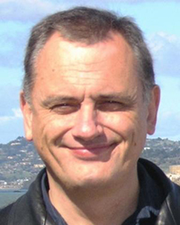

Satellite Workshop RECOMB 2012
SECOND ANNUAL RECOMB SATELLITE WORKSHOP ON MASSIVELY PARALLEL SEQUENCING (RECOMB-seq)
April 19-20, 2012
PRBB Building, Barcelona, Spain
Please note the venue of RECOMB-seq is NOT the same as RECOMB2012. Click here to see where the PRBB Building is located.
The supplement “Proceedings of the Second Annual RECOMB Satellite Workshop on Massively Parallel Sequencing (RECOMB-seq 2012)” has been published today. The full content of the supplement can be found at http://www.biomedcentral.com/bmcbioinformatics/supplements/13/S6 .
About the workshop
RECOMB-seq is a workshop held two days prior to the main conference, with a distinct paper submission process and program. Our goal is to bring together the community of scientists working on methods for massively parallel sequencing.
Scope
The recent revolution in sequencing technology has opened the door for myriads of new applications and bio-medical discoveries. Projects are under way to sequence thousands of individuals (the 1000 genomes project), tens of thousands of vertebrate species (the Genome10K project), and the whole microbial ecosystem that live in our bodies (the Human Microbiome project). Simultaneously, the novelty and complexity of the data has highlighted the challenges and limitations of current methods. As the technology continues to evolve and approaches its third generation, the challenges facing the community are becoming increasingly computational.
We would like to invite contributions describing new methodology to deal with all aspects of massively parallel sequencing data, including, but not limited to,
- Bio-medical applications, including cancer genomics
- Discovery and genotyping of genomic variants; including SNPs, indels, and structural variants
- Local and de novo sequence assembly
- RNA sequencing, including the analysis of RNA expression and novel transcript assembly
- Epigenetics, including ChIP-SEQ analysis, methylation profiling, and histone modifications
- Metagenomics
- Read mapping
- Methods for emerging sequencing technologies, such as single-cell or single molecule real time sequencing
DOWNLOAD THE PROGRAM OF RECOMB-SEQ HERE.
Keynote Speakers
 Alex ZELIKOVSKY,
Georgia State University, Atlanta, US
"Reconstruction of Haplotype Spectra from NGS Reads"
|
In many applications of NGS, sequenced samples contain multiple distinct but sometimes very similar sequences. This talk addresses two such applications: reconstructing viral quasispecies from shotgun and amplicon 454 Life Sciences reads and transcriptome reconstruction from RNA-Seq single and paired reads. Error-prone replication of RNA viruses with high mutation rate creates a diverse population of closely related variants known as quasispecies. By understanding the quasispecies, more effective drugs and vaccines can be manufactured as well as cost-saving metrics for infected patients implemented. Reconstructing the quasispecies spectrum is difficult since conserved regions in the genome can extend beyond the read length. We will compare a recently proposed approach of reconstruction from amplicon reads obtained from predefined overlapped genome regions with more developed reconstruction from shotgun reads randomly distributed along the entire genome. Transcriptome reconstruction and quantification from RNA-Seq reads can be greatly improved by using existing partial annotation as well as fully utilizing paired reads. We describe a framework which removes reads that can be explained by existing annotation and focuses on remaining reads for discovering novel transcripts and estimating its frequency. We next describe an optimization approach that minimizes number of selected candidate transcripts such that mapped paired reads closely follow known insert length distribution. |
![]() Pavel PEVZNER,
Pavel PEVZNER,
University of California, San Diego, US
"SPAdes: a New Genome Assembly Algorithm and its Applications to Single-Cell Sequencing"
|
The lion's share of bacteria in various environments cannot be cloned in the laboratory and thus cannot be sequenced using existing technologies. A major goal of single-cell genomics is to complement gene-centric metagenomic data with whole-genome assemblies of uncultivated organisms. Assembly of single-cell data is challenging because of highly non-uniform read coverage as well as elevated levels of sequencing errors and chimeric reads. We describe SPAdes, a new assembler for both single-cell and standard (multicell) assembly, and demonstrate that it improves on the recently released E+V-SC assembler (specialized for single-cell data) and on popular assem blers Velvet and SoapDeNovo (for multicell data). SPAdes generates single-cell assemblies, providing information about genomes of uncultivatable bacteria that vastly exceeds what may be obtained via traditional metagenomics studies. This is a joint work with Anton Bankevich, Sergey Nurk, Dmitry Antipov, Alexey Gurevich, Mikhail Dvorkin, Alexander Kulikov, Valery Lesin, Sergey Nikolenko, Son Pham, Andrey Prjibelski, Alexey Pyshkin, Alexander Sirotkin, Nikolay Vyahhi, Glenn Tesler, and Max Alekseyev.
|
Steering Committee
- S. Cenk Şahinalp, Simon Fraser University, Canada
- Michael Brudno, University of Toronto, Canada
- Inanc Birol, BC Genome Sciences Centre, Canada
Program Committee Chairs
- Paul Medvedev, UC San Diego, USA
- Eleazar Eskin, UCLA, USA
Program Committee
- Can Alkan, University of Washington, USA
- Vineet Bafna, UC San Diego, USA
- Vikas Bansal, Scripps Translational Science Institute, USA
- Dumitru Brinza, Life Technologies, USA
- Titus Brown, Michigan State University, USA
- Marc Chaisson, Pacific Biosciences, USA
- Hamidreza Chitsaz, Wayne State University, USA
- Nilgun Donmez, University of Toronto, Canada
- Jason Ernst, MIT, USA
- Eran Halperin, Tel Aviv University, Israel
- Nils Homer, Life Technologies, USA
- Fereydoun Hormozdiari, Simon Frasier University, Canada
- Zam Iqbal, University of Oxford, UK
- Christina Leslie, Memorial Sloan-Kettering Cancer Center, USA
- Ion Mandoiu, University of Connecticut, USA
- Gil McVean, University of Oxford, UK
- Hyun Min Kang, University of Michigan, USA
- William Noble, University of Washington, USA
- Bogdan Pasanuic, Harvard, USA
- Benedict Paten, UC Santa Cruz, USA
- Ben Raphael, Brown, USA
- Jared T. Simpson, University of Cambrige, Sanger Institute, UK
- Suzanne Sindi, Brown, USA
- Jens Stoye, Bielefeld University, Germany
- Fabio Vandin, Brown, USA
- Noah Zaitlen, Harvard, USA
- Alex Zelikovsky, Georgia State University, USA
- Daniel Zerbino, UC Santa Cruz, USA
List of Accepted Posters:
- José Ignacio Lucas Lledó and Mario Cáceres. Detection of chromosomal inversions with paired-end sequencing
- Thomas Bonfert, Gergely Csaba, Ralf Zimmer and Caroline C. Friedel. A context-based approach to identify the most likely mapping for RNA-seq experiments
- Ray Marin and Jiri Vanicek. Understanding the nucleation of the microRNA-mRNA pairing by using CLIP-Seq and RNA folding data
- Sònia Casillas, Can Alkan, Evan E Eichler and Mario Cáceres. Calling inversions from Next-Generation Sequencing Paired-End Mapping data with GRIAL
- Sílvia Bonàs, Josep M. Mercader and David Torrents. Empirical evaluation of different modern reference panels for imputation and their implication for Genome Wide Association Studies.
- Susanne Balzer, Ketil Malde, Inge Jonassen and Markus A. Grohme. Filtering duplicate reads from 454 pyrosequencing data
- Eva König, Lars Feuerbach, Barbara Hutter, Matthias Schlesner, Qi Wang, Benedikt Brors and Thomas Lengauer. Improving loss of heterozygosity identification by tumor purity estimation
- Anna Ritz, Suzanne Sindi, Ali Bashir and Benjamin Raphael. A Probabilistic Method for Structural Variant Prediction from Strobe Sequencing Data
- Nathan Boley. Integrative De Novo Transcriptome Assembly in Fruit Fly
- Ole Schulz-Trieglaff, Elizabeth Murchison, Zemin Ning and Anthony Cox. The devil is in the detail: mining and annotating genomic variants in the Tasmanian Devil facial tumour genome
- Irina Khrebtukova, Ryan Kelley, Shujun Luo, Tim Hill, Patrick Lau, Jennifer Chiniquy, Kathryn Stephens, Semyon Kruglyak and Gary P Schroth. Automated workflow for RNA-Seq analysis: application and testing with various types of RNA-Seq protocols
- André Corvelo and Tyler Alioto. The de novo Genome Assembly Assessment Server
- Kirstine Belling, David Flores, Daniel Elias, Jan Stenvang, Jun Wang, Nils Brünner, Henrik Ditzel and Ramneek Gupta. Improving RNA sequencing interpretation: a case study on breast cancer cell lines
- Ryan M. Layer, Aaron R. Quinlan and Ira M. Hall. Coalescing discordant read mapping signatures for structural variant breakpoint detection
- Joanna Ortiz Alcantara, Elizabeth González Durán, Araceli Rodriguez Castillo, Fabiola Garcés Ayala, José Miguel Segura Candelas, Claudia Wong Arámbula, Patricia Alcántara Pérez, Abril Rodríguez, Brisia Rodríguez, Juan Carlos Del Mazo, Susana Serrano, Gisela Barrera Badillo, Irma López Martínez, Lucía Hernández Rivas, Hugo López-Gatell, Celia Alpuche Aranda and José Ernesto Ramírez González. Analysis of pandemic (H1N1) 2009 Influenza A virus circulating in Mexico during the 2011-2012 season by ultra-deep sequencing
- Gregory Faust and Ira Hall. YAHA: fast and flexible long-read alignment with optimal breakpoint detection
- Norbert Dojer and Piotr Jaroszy.ski. Efficient and error-tolerant sequencing read mapping
- John R. McPherson, Yingting Wu, Patrick Tan and Steve Rozen. Identifying Genomic Copy Number Alteration and Loss of Heterozygosity in Next-Generation Sequence Data
- Fabio Vandin, Hsin-Ta Wu, Eli Upfal and Ben Raphael. Algorithms to Find Mutated Pathways in Cancer
- Dumitru Brinza, Zheng Zhang, Eric Tsung, Charles Scafe, Onur Sakarya, Alexander Joyner, Sowmi Utiramerur, Guy Del Mistro, Fiona Hyland and Ellen Beasley. Torrent Variant Caller: It's all about Speed, Accuracy, and Long Indels
- Santiago Marco Sola and Paolo Ribeca. The GEM toolkit: world-class short read mapping, and more
- Maga Rowicka and Abhishek Mitra. Strategies for sequencing and analysis of low-diversity samples
- Abhishek Mitra and Maga Rowicka. Instant-Seq:- an integrated tool with web interface for fast analysis of ChIP-Seq data
- Nicholas Mancuso, Bassam Tork, Pavel Skums, Ion Mandoiu and Alex Zelikovsky. Poster: Quasispecies Spectrum Reconstruction using Multi-commodity Flows
- Aida Ouangraoua, Krister Swenson and Anne Bergeron. On the comparison of sets of alternative transcripts (Poster)
- Zhanyong Wang, Farhad Hormozdiari, Wen-Yun Yang, Eran Halperin and Eleazar Eskin. CNVeM: Copy Number Variation Detection Using Uncertainty of Read Mapping
-
David G. Knowles, Maik Röder, Angelika Merkel and Roderic Guigó. GRAPE RNAseq Analysis Pipeline Environment
List of Accepted Papers & Presentations:
- A new strategy to reduce allelic bias in RNA-Seq read-mapping
- SCALCE: boosting Sequence Compression Algorithms using Locally Consistent Encoding
- Exploiting Sparseness in de novo Genome Assembly
- MGMR: leveraging RNA-Seq population data to optimize expression estimation
- Haplotype reconstruction using perfect phylogeny and sequence data
- Biases in read coverage demonstrated by interlaboratory and interplatform comparison of 117 mRNA and genome sequencing experiments
- KisSplice: de-novo calling alternative splicing events from RNA-seq data
- An Improved Approach for Accurate and Efficient Calling of Structural Variations with Low-coverage Sequence Data
- PAIR: Polymorphic Alu Insertion Recognition
- Systematic Identification of Intersperse Duplication using Paired End Sequencing
- CLEVER: Clique-Enumerating Variant Finder
- High-resolution genetic mapping with pooled sequencing
- A context-based approach to identify the most likely mapping for RNA-seq experiments
- Reconstructing Cancer Genome Organization
- Robustly estimating percent inclusion of alternatively spliced junctions from low-coverage RNA-seq data
Downloadable list available here.